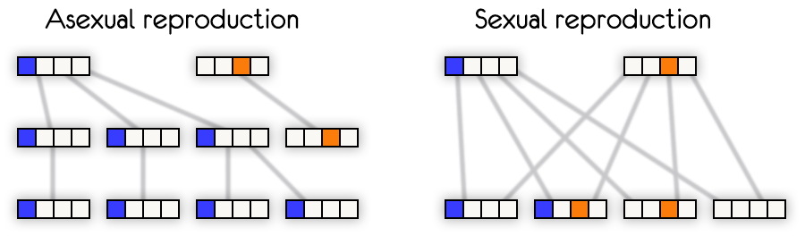
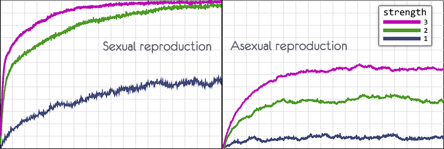

Let's try to compare sexual and asexual reproduction on small math models.
The models use the following definitions:
Reality is a bit more complicated.
Not every type of sexual reproduction has gene recombination (e.g. parthenogenesis), while some species with asexual reproduction do have alternate ways to recombine genes(e.g. horizontal gene transfer)
The real genome's structure is quite complicated, but in these math models, a simple sequence of digits and letters will be enough.
Let's start with the first model.
probability of mutation
The blue text on the top is the perfect genome. Each organism should try to achieve it.
A genome is a sequence of 57 symbols
There are 20 organisms in the model. Their genome is recorded in the rows.
Their initial genome is blank.
The simulation goes for 900 generations.
An organism's fitness is measured by the number of matches with the perfect genome.
These matches are marked green.
Total number of matches in organisms is displayed on the left side.
In each generation, we will leave half of the organisms which then will form the next generation.
We can simply exclude the ones with lower fitness. But we will use a more natural way of selection.
Fitness will determine the chance of an organism to leave an offspring.
This way, even the weakest organism will have a chance for reproduction and vice-versa.
This will make the simulation a bit closer to reality.
Let's see an example.
We have three organisms with the fitness of 11, 13, and 12 respectively.
Let's calculate the reproduction probability.
new fitness = original fitness - (minimal fitness - 1)
With each step, we select half of the organisms to be the foundation for the next generation.
The hash symbol on the left marks organisms selected to form the next generation.
The type of reproduction is determined by us. Checking the cross checkbox enables sexual reproduction.
Each organism in a new generation can mutate.
The probability of mutation is set by the user.
When an organism mutates a random symbol in its genome is replaced by another random symbol.
We have two organisms. Each of them has a beneficial gene in different positions.
With asexual reproduction, the descendants of only one of the organisms will remain in the population.
Asexual organisms can't recombine genes, so the only source of changes in the population are mutations.
With sexual reproduction, both parents can pass their beneficial mutations to a new organism.

This scheme illustrates the advantages of sexual reproduction.
But if you play around with the model, you will notice that the advantage is insignificant.
Only with a high probability of mutation, does sexual reproduction begin to show better results.
Sexual reproduction becomes more effective than asexual only if there are many various beneficial mutations in different organisms in the population at the same time.
This way organisms with combined beneficial mutations will appear in each new generation.
To boost efficiency even more we can increase the size of the population and genome's length.
The larger the population size, the more beneficial mutations will appear in a generation, and the more effective sexual reproduction becomes.
But population size also plays a huge role in natural selection.
In a large population, even the small benefits that a new mutation provides will be noticed by natural selection and spread quickly in the population.
Now we will see another model showing how the frequency of variants of the same gene in a population changes with the change of generations and how the effectiveness of natural selection depends on the size of the population.
the size of the population
adaptive advantage
initial ratio
Some definitions before we begin:
Different variants of the same gene (alleles) may be present in the population.
If each allele is equally beneficial, then during the transition to the next generation a random shift in allele frequencies will happen.
Moreover, the smaller the population size, the more drastic changes in the frequency of alleles will occur.
In a population of limited size, one allele will eventually displace the other.
The smaller the population size, the faster this will happen.
In a large population, if an allele gives an advantage, then the more likely it is to replace all other alleles.
In a small population, even an advantageous allele can disappear due to random frequency fluctuation.
In small populations, genetic drift can be more impactful than natural selection..
You can see it in the screenshots below.
The graphs show the distribution of the advantageous allele in the population.
The left graph shows four simulations with a population size of 1000.
In two out of four cases, the allele disappeared despite being advantageous.
The right graph shows four simulations with a population size of 256000.
Natural selection spreads the allele in the population.
Let's say there are two variants of the same gene in the population:
Before launching the model we can set the:
The model simulates frequency changes of four pairs of alleles at once. The pairs are marked with different colors.
To calculate the allele's frequency the following algorithm is used:
Lets say the size of the population = 1000, where Variant A = 400, Variant B = 600
We generate a random number in the range from 0 to 1000.
If Variant A has a 1 % advantage, we increase the range by 1% and get 404 .
We generate a random number within a range of 0 to 1004 (404 + 600)
This is an improved version of the first model. To see the advantages of natural selection, I increased the size of the population (600, 1800, 5400) and the length of the genome (224).
Each gene can increase fitness by one point, decrease it by one, or have no effect at all.
The probability of negative mutation is 90 times higher.
You can choose different types of presentation:
By experimenting with the model, we can make sure that sexual reproduction (cross) not only increases the rate at which the fitness of the population grows but also increases the limit to which fitness can reach.
In the third image, sexual reproduction was disabled and fitness immediately began to decline.
probability of mutation defines the probability for mutation (random change of a gene) to occur in a new organism.
The model shows that sexual reproduction does not significantly affect the evolution of the population.
Genetic recombination quickly accumulates beneficial mutations and displaces negative ones.
Moreover, with an increase in the probability of mutations the rate of evolution also increases.
With asexual reproduction, an increase in the probability of mutations limits the maximum level of fitness.
The model allows disabling mutation by setting the probability to zero.
Without mutations all the organisms will quickly achieve one common genome.
With sexual reproduction, a significant part of beneficial genes will remain, while most of the negative ones will be displaced from the genome.
With asexual reproduction, the population will become clones of one type of organism.
We can launch the model a few times and see how groups of clones compete.
The last surviving genome type is a clone of one of the original organisms.
This experiment very clearly shows the advantage of sexual reproduction.
And if we increase a population from 600 to 5400, then with sexual reproduction an almost perfect genome will appear, with only a few genes missing.
With asexual reproduction, the result will be clones of one of the original organisms.
force of selection defines the intensity of natural selection in the model.
The higher it is, the less likely it is for the less fit to leave offspring
The image below shows the probability of leaving offspring for individuals with fitness of 11, 12 and 13.
Setting the parameter to 0 , disables natural selection.
The probability of leaving offspring is completely random for each organism.
In the first model, I've explained how natural selection works.
Now, the formula is:
new fitness = original fitness - (minimal fitness - constant)
The constant value depends on the force of selection
With the value of the force of selection = 1, the difference in the selection is a fraction of a percent, but development still occurs.
If you disable selection, force of selection = 0, the population's genome will quickly return to its original state, where each gene will have a random value.
The size of the population greatly affects its development.
The model has three available sizes (600, 1800, 5400)
(Only 600 genomes are visible in the Genome mode)
Для графиков использовался самый слабый отбор force of selection = 1
При половом размножении вероятность мутации 0.5, при бесполом 0.1
In the charts below force of selection = 1 .
With sexual reproduction, the probability of mutation is 0.5, with asexual 0.1